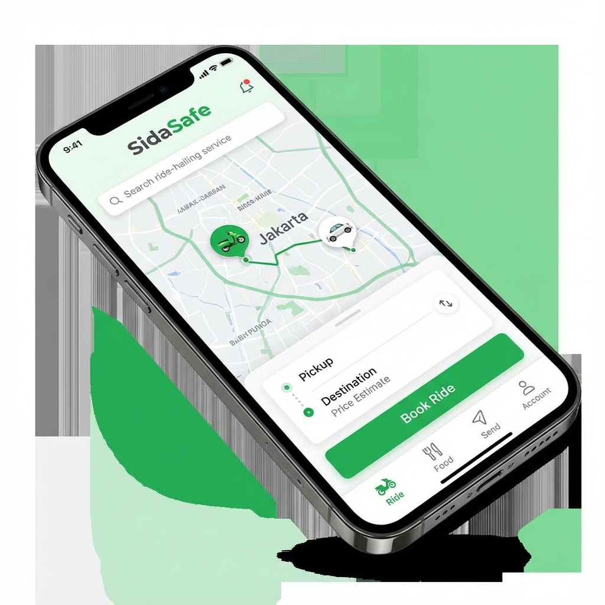
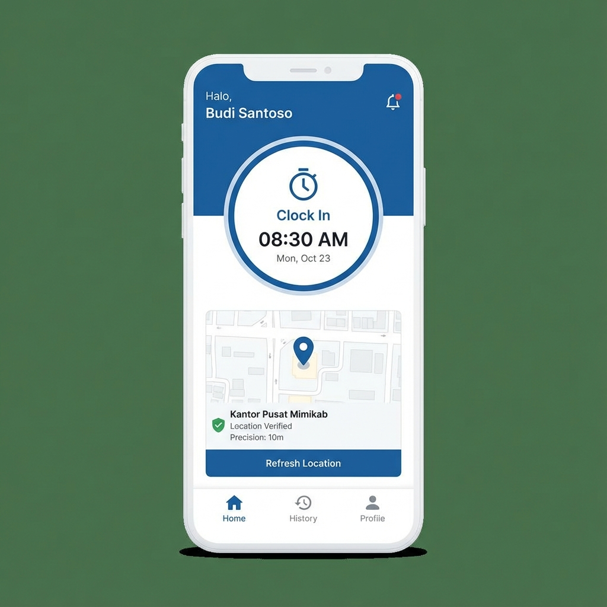
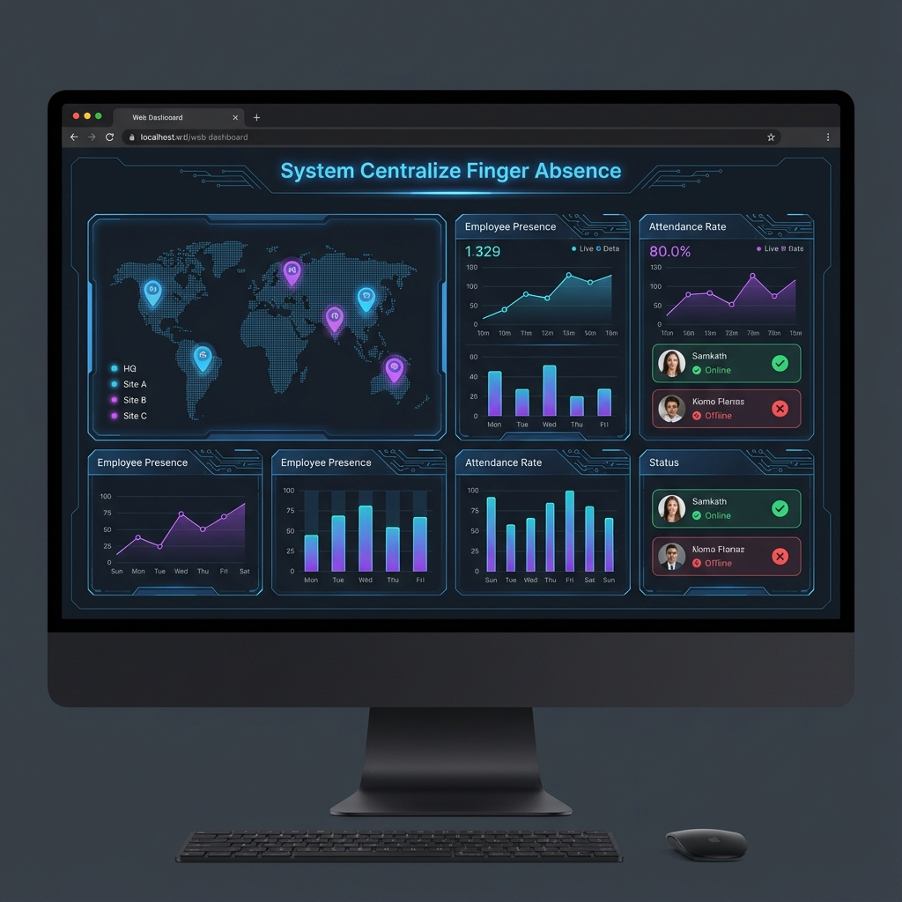

Ekosistem IT Komprehensif.
Kami menyediakan tulang punggung untuk transformasi digital Anda dengan layanan end-to-end yang disesuaikan skala Anda.
INFRASTRUKTUR
Pengadaan server kelas enterprise, solusi jaringan, dan deployment hardware.
SOFTWARE
Aplikasi web kustom, aplikasi mobile, dan integrasi sistem dengan teknologi modern.
MANAGED SERVICES
Pemeliharaan IT proaktif, lisensi Microsoft 365, dan dukungan teknis penuh.
Karya Terbaru
Kami
SidaSafe
Solusi transportasi modern dengan sistem pelacakan armada real-time dan keamanan terintegrasi.

Mimikab
Sistem presensi cerdas berbasis biometrik dan geofencing untuk manajemen SDM yang presisi.

Centralize
Finger
Pusat kendali data absensi yang mengintegrasikan berbagai perangkat keras ke dalam satu platform analisis yang komprehensif.
